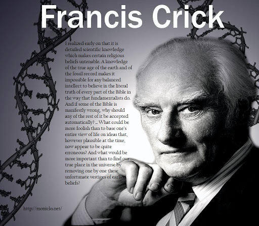

Sources of Francis Crick
- Maddox, Brenda (2002). Rosalind Franklin: the dark lady of DNA. London: HarperCollins. ISBN 0-06-018407-8.
- Olby, Robert (2009). Francis Crick: Hunter of Life's Secrets. Cold Spring Harbor Laboratory Press. ISBN 978-0-87969-798-3.
- Ridley, Matt (2006). Francis Crick: Discoverer of the Genetic Code. Ashland, OH: Atlas Books. ISBN 0-06-082333-X.
- Wilkins, Maurice (2003). The Third Man of the Double Helix: The Autobiography of Maurice Wilkins. Oxford University Press. ISBN 0-19-860665-6.